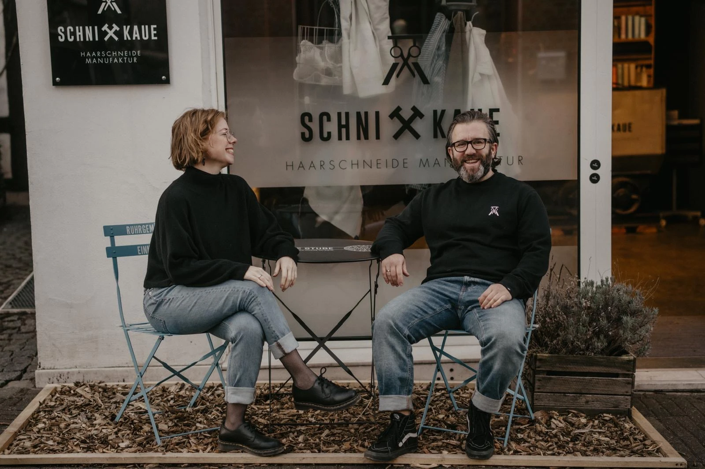
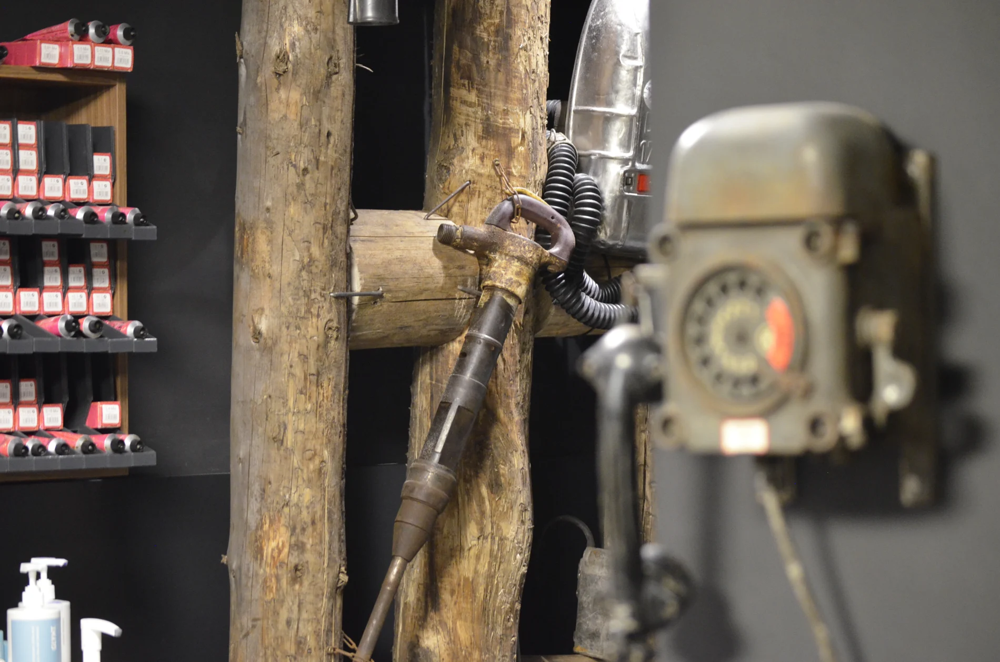
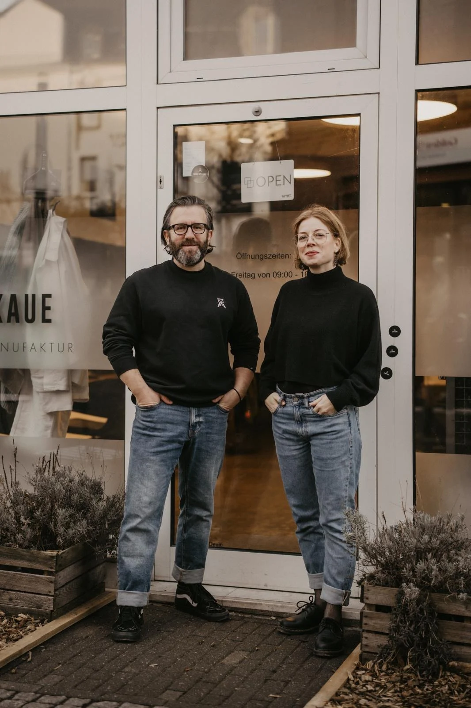
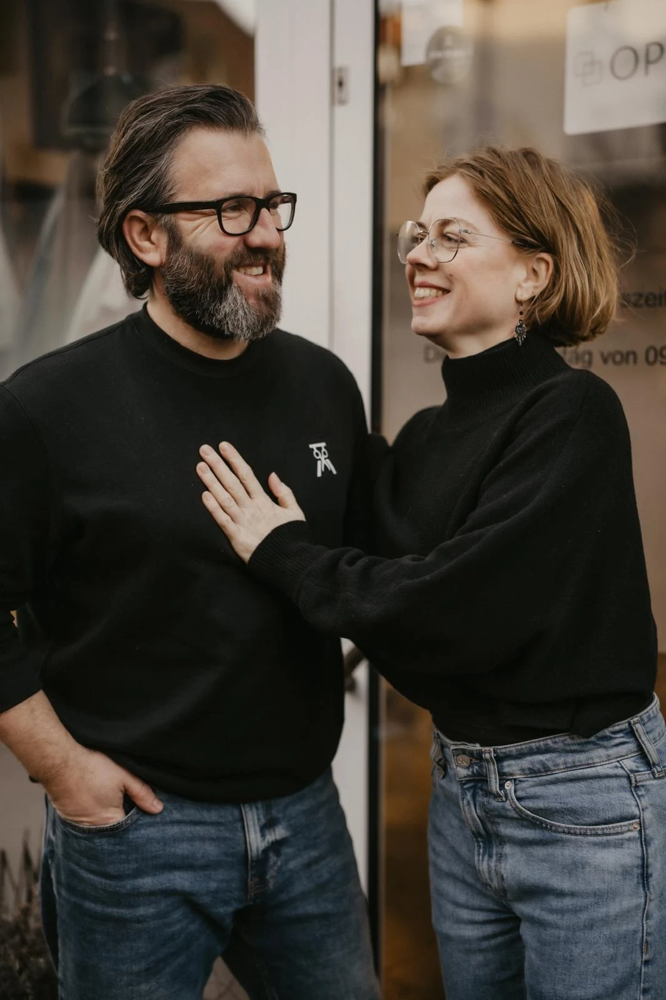
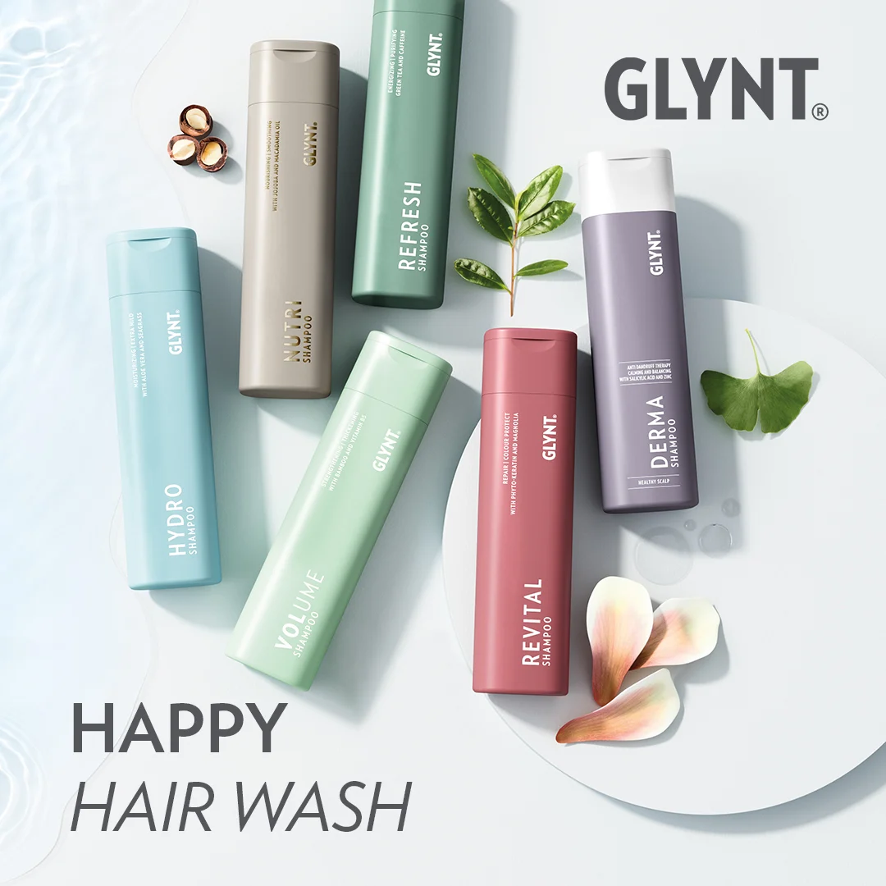

WILLKOMMEN IN DER SCHNITTKAUEWillkommen bei uns
im digitalen Salon!
Wir freuen uns, dass Du den Weg zu uns auf die Webseite gefunden hast. Bist Du auf der Suche nach einem Termin? Dann ruf uns gern an oder schreib ne Email.
Möchtest Du unsere Leistungen kennenlernen? Dann scrolle etwas weiter runter.
Magst Du einen Blick in unseren Salon werfen?
HIER GEHT’S ZUM SALONSCHNITTKAUE · HAARSCHNEIDE MANUFAKTUR
Ein Salon mit Charakter.
Ein Look, der zu Dir passt.
Willkommen in der Schnittkaue - Eine Ode an den Bergbau & die Zechenkultur aus dem Ruhrgebiet - hier entsteht auch Dein neuer Look!
Von einem frischen Schnitt über eine neue Haarfarbe bis zum Styling für Deinen großen Moment – wir nehmen Deine Wünsche als Ausgangspunkt und beraten Dich persönlich.
LASS UNS ÜBER DEINEN LOOK SPRECHEN
UNSERE LEISTUNGEN
Für Deinen Kopf.
Und Dein gutes Gefühl.

Dein Schnitt.
Dein Stil.
Ein guter Haarschnitt unterstreicht Deine Persönlichkeit. Ob klare Konturen, neue Längen oder ein frischer Look: Gemeinsam finden wir heraus, was zu Dir und Deinem Alltag passt.
- Damenhaarschnitte
- Herrenhaarschnitte
- Kinderhaarschnitte
- Föhnen / Styling
Neue Nuancen.
Frisches Haargefühl.
Sanfte Veränderung oder ein ganz neuer Farbton? Wir besprechen Deinen Farbwunsch und stimmen Farbe, Strähnen und Pflege auf Dein Haar ab.
- Strähnen
- Farbe
- Tönung
- Haarpflege

Für die besonderen
Momente.
Eine Hochzeit, ein Fest oder einfach Lust auf ein schönes Detail: Wir stimmen Frisur und Make-up auf Deinen Anlass und Deine Wünsche ab.
- Hochzeitsfrisuren
- Hochsteckfrisuren
- Make-up
- Wimpern färben
- Augenbrauen färben
- Augenbrauen zupfen – auch mit Faden
INDIVIDUELLE PFLEGE MIT GLYNT
Was Dein Haar braucht.
Auch zu Hause.
Haarpflege ist persönlich. Deshalb empfehlen wir Dir Produkte der Firma GLYNT individuell nach Deinem Bedarf.
Gemeinsam schauen wir, welche Pflege zu Deiner Haarstruktur, Deiner Kopfhaut und Deinen Stylingwünschen passt. So findest Du eine Routine, die sich gut in Deinen Alltag einfügt.
FRAG UNS NACH DEINER PFLEGE
EINBLICKE IN DIE SCHNITTKAUE
Unser Handwerk.
Unser Revier.
WIR FREUEN UNS AUF DICH
Zeit für Deinen
nächsten Besuch?
Münsterstraße 20 · 45657 Recklinghausen
Ruf uns an oder schreib uns eine Email.
Termine, Fragen zu unseren Leistungen und Preise besprechen wir gerne persönlich mit Dir.